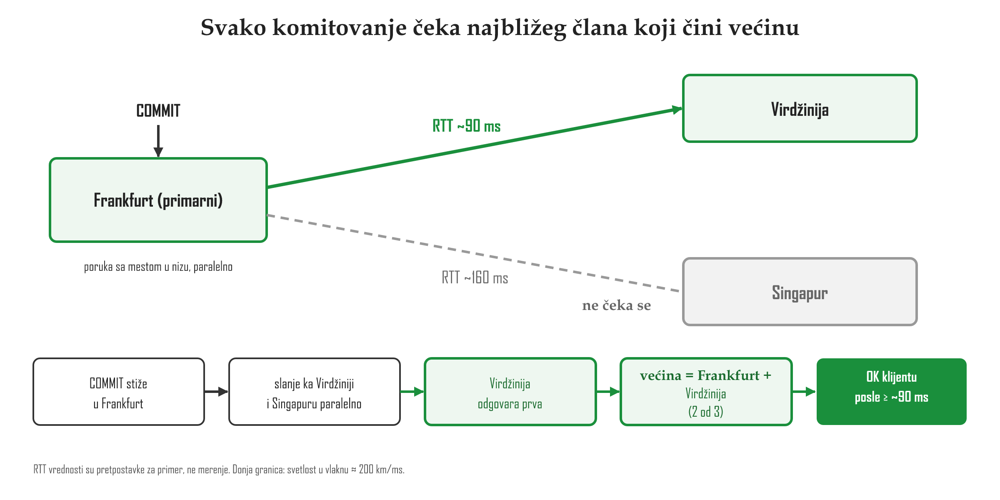
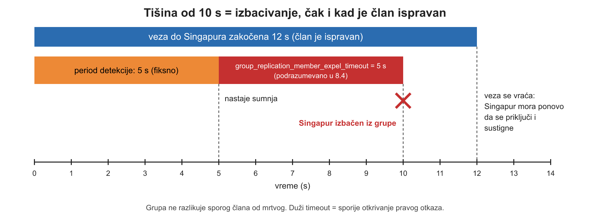
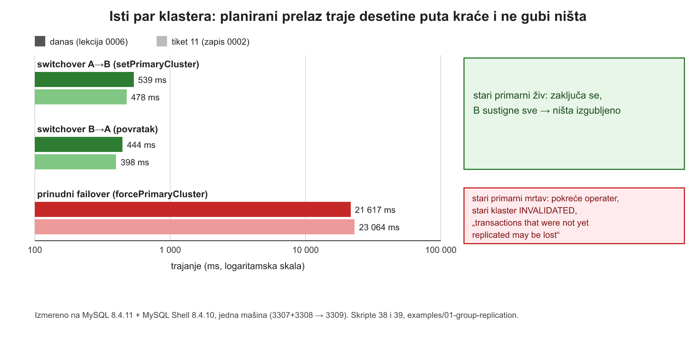

![Data centar A sa primarnim klasterom poliklinikaCluster: 3307 prima upise, 3308 je sekundarni sa super_read_only 1, povezani Group Replication-om koji čeka većinu. Zelena isprekidana granica oko njih je opseg garancije OK-a. Klijent šalje COMMIT na 3307 i dobija OK. Isprekidana strelica clusterset_replication, asinhroni kanal koji OK ne čeka, vodi ka 3309 u data centru B, replika-klasteru drCluster, koji odbija upis greškom 1290. Na strelici su dve transakcije u letu, a crveni okvir kaže: prozor gubitka, ako nestane ceo data centar A, T postoji samo na mrtvim diskovima.](../viz/viz-l06-clusterset-arhitektura-1793110711500.png)
Lekcija 06 · Poglavlje 6 (Geo-distribuirana replikacija i InnoDB ClusterSet)
Lekcija 05 je pokazala da grupa radije blokira manjinu nego da dozvoli razilaženje. Ova lekcija pokazuje zašto se ta grupa ne razvlači preko regiona, šta MySQL radi umesto toga i zašto na tom nivou isti proizvod bira suprotno.
Svetlost u optičkom vlaknu putuje oko trećinu sporije nego u vakuumu (indeks prelamanja stakla je oko 1,47), što je oko 200 km po milisekundi. To je fizika, ne softver: nijedan protokol ni podešavanje to ne menjaju. Stvarni put kabla je duži od vazdušne linije, pa je račun ispod donja granica.
one way = distance / (200 km/ms) round trip (RTT) = 2 * one way -- before any processing 1000 km of fibre -> at least 10 ms RTT
Na našoj topologiji (3307/3308/3309, ista mašina) RTT je reda mikrosekundi. Zato su sve cene izmerene u lekciji 05 (16 ms za komitovanje) cene diska i obrade, a ne razdaljine. Ovo jedino ne možemo da pokažemo lokalno, i to je fizika, a ne funkcija koja nedostaje.
Dve stvari koje već imaš iz lekcije 05: pre nego što primarni vrati OK, većina članova mora da primi transakciju i njeno mesto u zajedničkom nizu. Primena kod ostalih dolazi kasnije. Asinhrona je primena, a dogovor o redosledu se čeka na svakom komitovanju. Kad se to spoji sa fizikom, primarni čeka najbližeg člana koji sa njim čini većinu.

Drugi razlog je opasniji. Grupa ne zna da je član otkazao, nego to zaključuje iz tišine: posle 5 s
tišine nastaje sumnja, a posle još group_replication_member_expel_timeout sekundi (podrazumevano 5 u 8.4)
član se izbacuje.

Pet sekundi je izbor projektanata, a ne izvedena konstanta. Podrazumevana vrednost se menjala kroz verzije i može da se podesi. Ali svako podešavanje je kompromis, a ne rešenje. Refman zato kaže otvoreno:
Unutar data centra je grupa dobra, jer je RTT mali. Između data centara ne sme da se čeka. Alat koji ne čeka primaoca već imaš: asinhroni kanal (lekcija 02). Spoj je InnoDB ClusterSet, dokumentovan u MySQL Shell manual-u, a ne u refman-u. Zato ga je memo 07 promašio i tvrdio da MySQL nema posebnu funkciju za geo-distribuciju.
Kanal između klastera se zove clusterset_replication i asinhron je. Dva klastera sa dva
primarna čvora bi bila dva lidera bez zajedničkog niza, jer zajednički niz postoji samo unutar jedne grupe.
Zato ClusterSet primenjuje najjednostavnije pravilo: upise prima samo jedan klaster, a svi
replika-klasteri su super_read_only. Sukob između regiona se ne rešava, nego sprečava.
Preduslov: topology.ps1 start, zatim 10-gr-up.js i
20-clusterset-up.js (README u examples/01-group-replication/). Skripta upisuje jedan
probni red u poliklinika.heartbeat na 3307. Na kraju sesije pokreni 19-gr-down.ps1.
cd examples\01-group-replication mysqlsh --js --no-wizard --file 43-clusterset-status.js
ClusterSet poliklinikaCS: HEALTHY - All Clusters available. drCluster: role=REPLICA global=OK ... receiver=ON applier=APPLIED_ALL source=127.0.0.1:3307 poliklinikaCluster: role=PRIMARY global=OK port 3307 super_read_only=0 INSERT -> ACCEPTED port 3308 super_read_only=1 INSERT -> REFUSED: ... --super-read-only ... port 3309 super_read_only=1 INSERT -> REFUSED: ... --super-read-only ... 3309 channels: clusterset_replication ON, group_replication_applier ON, ...
Kako se ovo čita: na 3309 rade dva kanala istovremeno. Jedan je asinhroni dovod iz drugog klastera, a drugi je unutrašnji kanal njegove grupe. 3308 odbija upis jer je sekundarni u svojoj grupi (Poglavlje 5). 3309 ga odbija jer je ceo njegov klaster replika (Poglavlje 6).
Definicija iz lekcije 04: kod switchover-a je stari izvor živ i
može da preda sve, a kod failover-a nije. ClusterSet sprovodi tu razliku doslovno.
setPrimaryCluster() zaključava stari primarni klaster (globalni lock), čeka da novi sustigne sve, pa
tek onda menja uloge: prozor gubitka se zatvara tako što se sačeka da se isprazni.
forcePrimaryCluster() ne može da pita mrtvi klaster šta je imao. Proverava samo da li među živima
ciljni klaster ima najnoviji GTID skup.
Preduslov: ClusterSet podignut kao gore. Skripta vraća uloge na kraju.
mysqlsh --js --no-wizard --file 38-clusterset-switchover.js
** Waiting for the promoted cluster to apply pending received transactions... ** Acquiring global lock at PRIMARY * Synchronizing remaining transactions at promoted primary Cluster 'drCluster' was promoted to PRIMARY of the clusterset. switchover took ... ms (stotine ms) 3307: REFUSED - ... --super-read-only ... 3309: ACCEPTED
Kako se ovo čita: stari primarni je živ, pa se zaključa i preda sve. Uloge se menjaju bez gubitka i za manje od sekunde.
Preduslov: ClusterSet podignut. Skripta 39 ubija procese 3307 i 3308
(3306 se ne dira), a zatim ih ponovo podiže. Skripta 40 popravlja ClusterSet. Ako 3308 posle toga ostane
(MISSING), pokreni cluster.rejoinInstance() za 3308.
powershell -ExecutionPolicy Bypass -File 39-clusterset-emergency-failover.ps1 mysqlsh --js --no-wizard --file 40-clusterset-repair.js
3309 super_read_only = 1
write REFUSED
clusterset status = UNAVAILABLE : Primary Cluster is not reachable from the Shell, ...
Former PRIMARY cluster 'poliklinikaCluster' was INVALIDATED, transactions that were not yet
replicated may be lost.
In case of network partitions and similar, the former PRIMARY Cluster 'poliklinikaCluster' may
still be online and a split-brain can happen. To avoid it, use <Cluster>.fenceAllTraffic() ...
failover took ... ms (desetine sekundi)
poliklinikaCluster : role=REPLICA global=INVALIDATED
Skipping rejoining remaining instances because the Cluster belongs to a ClusterSet and is INVALIDATED.
clusterset: HEALTHY : All Clusters available. primary=poliklinikaCluster
Kako se ovo čita: preživeli klaster se nije sam unapredio. Upis odbija
dok operater ne pokrene komandu. Alat sam kaže da podaci mogu biti izgubljeni i da je moguć split brain.
Stari klaster ostaje INVALIDATED i ne vraća se sam: možda ima transakcije koje novi primarni
nema, pa nazad sme tek posle provere operatera.

CAP izbor se procenjuje po operaciji. Kad manjina grupe dobije upis, on visi, iako čvor radi. Za upise je žrtvovana dostupnost, a dobitak je da se ništa ne razilazi. To što čitanje na manjini radi tiče se čitanja. U pravoj particiji ono može da vrati zastarele podatke, ali to je izvođenje iz rada grupe, a ne rečenica iz manual-a. Rad se odnosi na upise, jer se razilaženje dešava samo kroz njih.
Između klastera je obrnuto. Replika-klaster sme da preuzme upise bez starog primarnog, uz cenu „may be lost“ i „split-brain can happen“. U normalnom radu se ne čeka, pa replika-klaster može da kasni. Proizvođač oba izbora imenuje sam.
![Dve kolone. Levo, unutar klastera, Group Replication: pet čvorova podeljenih 2 prema 3, manjina sa upisom koji visi. Kad se izgubi veza, manjina blokira upise; bira konzistentnost; u normalnom radu čeka većinu; citat iz refman-a: the system does not progress until this issue is resolved. Desno, između klastera, InnoDB ClusterSet: primarni klaster i replika-klaster razdvojeni prekidom; posle forcePrimaryCluster replika-klaster prima upise; bira dostupnost; u normalnom radu ne čeka; citat iz Shell manual-a: InnoDB ClusterSet prioritizes availability over data consistency in order to maximize disaster tolerance. Dole: prelaz na dostupnost je jedna komanda operatera, konzistentnost je odluka operatora, a ne svojstvo sistema.](../viz/viz-l06-cap-dva-nivoa-1793110732604.png)
Dok niko ništa ne pokrene, 3309 bira konzistentnost (super_read_only = 1, UNAVAILABLE). Izbor
dostupnosti nije napravio MySQL, nego operater, jednom komandom. To je okosnica rada u najčistijem
obliku: konzistentnost je odluka operatora, a ne svojstvo sistema.
Jedno pitanje po tvrdnji lekcije. Odgovaraj iz sećanja, pre nego što pogledaš gore.
1. Dva data centra su udaljena 2000 km duž kabla. Koliko je najmanje povratno putovanje između njih?
Jedan smer: 2000 / 200 = 10 ms; povratno putovanje: 20 ms. To je donja granica, jer je stvarna mreža samo sporija.
2. Grupa od tri člana: primarni u Frankfurtu, članovi na RTT 90 ms i 160 ms. Koliko najmanje čeka svako komitovanje zbog mreže?
Većina od tri su dva, a primarni je jedan od njih. Čeka se prvi odgovor, a poruke idu paralelno. Primena se ne čeka, ali dogovor o redosledu se čeka.
3. Ispravan član grupe ćuti 12 s zbog zagušene veze, a podešavanja su podrazumevana (8.4). Šta se desi?
5 s detekcije + 5 s expel timeout = 10 s, manje od 12. Ostala dva člana su većina, pa upisi teku. Grupa sporog člana ne razlikuje od mrtvog.
4. Kojim pravilom ClusterSet čini sukobe upisa između klastera nemogućim?
Sukob traži dva upisivača. Certification između klastera bi tražila zajednički niz, a to znači čekanje preko regiona. Replika-klasteri su super_read_only.
5. Klijent je na 3307 (primarni klaster 3307+3308) dobio OK za T. Ceo primarni klaster nestane, a operater na 3309 pokrene forcePrimaryCluster. Šta važi za T?
OK pokriva većinu primarnog klastera, a ona je nestala. Kanal ka 3309 je asinhron. Isti prozor gubitka kao u lekciji 02, samo između klastera.
6. Zašto se posle prinudnog failover-a stari primarni klaster označava sa INVALIDATED i ne vraća se sam?
Transakcije koje nisu stigle kroz asinhroni kanal postoje samo kod njega. Novi primarni je nastavio svoju istoriju, pa bi samostalni povratak spojio dve istorije.
7. Grupa od pet članova se podeli 2 | 3, a primarni je na strani sa dva člana. Koji je CAP izbor za upis na njemu?
CAP se procenjuje po operaciji. Upis na manjini ne dobija odgovor. Uloga primarnog kaže gde se upisi primaju, ne ko odlučuje. Greška 1180 je poraz u sukobu, a ne gubitak kvoruma.
8. Primarni klaster je odsečen, a replika-klaster radi i odbija upise. Kada ClusterSet prelazi na izbor dostupnosti?
Na našoj topologiji 3309 je ostao super_read_only i UNAVAILABLE sve do komande. Između klastera nema zajedničkog glasanja. Izbor je jedna komanda operatera.
Rezultat: 0 / 0